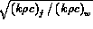
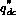

A comprehensive theoretical model of heat transfer in the post-CHF region must take into account the various paths by which it transferred from the surface to the bulk vapor phase. Six separate mechanisms may be identified:
One of the first semi-theoretical models proposed was that of Bennett et al., (1964) which is a one-dimensional model starting from known equilibrium conditions at the point of CHF. It was originally assumed that there is negligible pressure drop along the channel by Groeneveld (1974) revised the equations to allow for pressure gradient and flashing effects. It was also assumed that droplets could no longer approach the surface. Therefore, mechanisms (a) and (b) were not considered.
More recently Iloeje et al, (1974) have proposed a three step model taking into account mechanisms (a), (b) and (c). The physical picture postulated by Iloeje is shown in Figure 8.2. Liquid droplets of varying sizes are entrained in the vapor cor and have a random motion due to interactions with eddies. Some droplets arrive at the edge of the boundary layer with sufficient momentum to contact the wall even allowing for the fact that, as the droplet approaches the wall, differential evaporation coupled with the physical presence of the wall leads to a resultant force trying to repel the droplet (Gardner, 1974). When the droplet touches the wall a contact boundary temperature is set up which depends on the initial droplet and wall temperature and on  If this temperature is less than some limiting superheat for the liquid then heat will be transferred, first by conduction until a temperature boundary layer is built up sufficiently to satisfy the conditions necessary for bubble nucleation. Bubbles will grow within the droplet Rao (1974) ejecting part of the liquid back into the vapor stream. The remaining liquid is insufficient in thickness to support nucleation and therefore, remains until it is totally evaporated. The surface heat flux transfered by this mechanism can be arrived at by estimating the product of the heat transferred to a single drop and the number of droplets per unit time and per unit area which strike the wall. Iloeje et al., attempted to quantify the various mechanisms identified above and finally arrive at a somewhat complex expression for the droplet-wall contact heat flux (  ).
The droplet mass flux to the wall can be estimated from one of a number of turbulent deposition models Hutchinson (1971). It is important to appreciate that at very low values of the heat flux ( ) predicted from the Iloeje model must coincide with the droplet deposition flux contribution of the Hewitt film flow model of critical heat flux. The trends with vapor quality and mass velocity appear qualitatively correct but a rigorous quantitative comparison with, for example, the prediction of Whalley et al., (1973) is needed for a range of working fluids.
Two basic approaches have been taken to estimate the heat flux ( ) to droplets entering the thermal boundary layer but which do not touch the wall. This heat flux can be estimated as the product of the heat flux that would occur across a vapor film separating the droplet from the heating surface and the fractional area covered by such droplets. This approach has been adopted with slight modifications by Iloeje (1974), Groenveld (1974), Plummer (1974) and Course (1974). All of these approaches follow the original treatment by Bennett. Thus, one should begin here for such a theoretical approach.